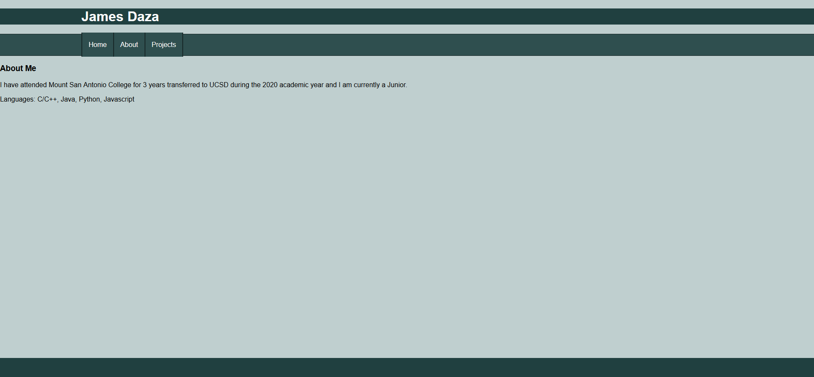
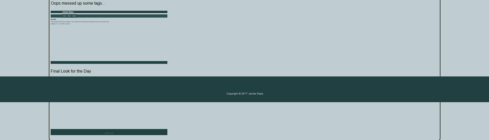

12/06/2020 (Note: I wrote this in notepad at the time since I just decided to work on this)
Decided to make website logging things here to document the proccess
since I do not know how to make a website hopefully portfolio based.
I have finals in a little under 2 weeks so I will be putting this off until winter break.
12/26/2020
Researched for week about basic html and css by reading documentation and watching videos
I was able to create a local basic website that isn't currently hosted at the time of
writing this post. I plan to use GitHub Pages to make hosting this really simple.
I actually tried using a gray color scheme at first but thought it looked really off.

Oops messed up some tags...

Really nasty mistake with the footer had to use wrapper to fix the bleeding past the footer.

Final Look for the Day

I am really happy that I decided to work on this and satisfied with what I acomplished today.